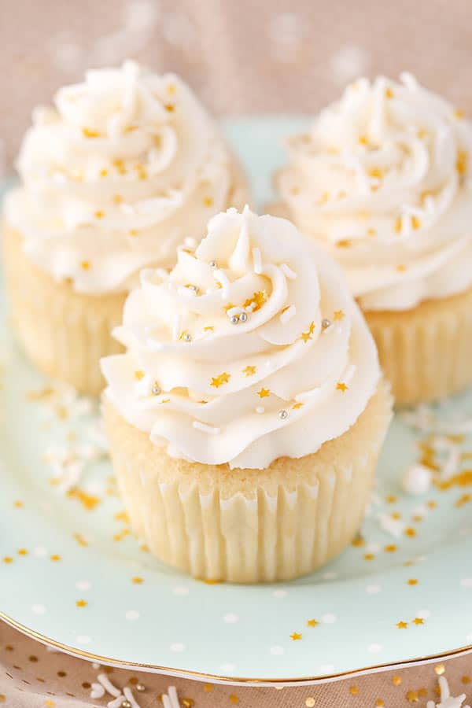

Vanilla Cupcake Recipe
Easy & Simple Recipe For You To Try At Home
Category: Dessert | Cuisine: American | Prep Time: 15 minutes | Cook Time: 15 minutes | Total Time: 30 minutes | Servings: 24-26 cupcakes | Method: oven

Ingredients
Vanilla Cupcakes
2 1/2 cups (325g) all purpose flour
1/2 cup (120ml) vegetable oil
Vanilla Frosting
1 cup (224g) unsalted butter, room temperature
4 cups (460g) powdered sugar
1 1/2 tsp vanilla extract
2–3 tbsp (30-45ml) water or milk
Instructions
1) Preheat oven to 350°F (176°C) and prepare a cupcake pan with liners.
2) Add the flour, sugar, baking powder and salt to a large mixer bowl and combine. Set aside.
3) Add the milk, vegetable oil, vanilla extract and eggs to a medium sized bowl and combine.
4) Add the wet ingredients to the dry ingredients and beat until well combined.
5) Slowly add the water to the batter and mix on low speed until well combined. Scrape down the sides of the bowl as needed to make sure everything is well combined. Please note that the batter will be very thin.
6) Fill the cupcake liners about half way and bake for 15-17 minutes, or until a toothpick comes out with a few moist crumbs.
7) Remove the cupcakes from oven and allow to cool for 2 minutes, then remove to a cooling rack to finish cooling.
8) To make the frosting, beat the butter in a large mixer bowl until smooth.
9) Add 2 cups of powdered sugar and mix until smooth.
10) Add the vanilla extract and 1 tablespoon of water or milk and mix until smooth.
11) Add remaining powdered sugar and mix until smooth.
12) Add remaining water or milk, as needed, and salt and mix until smooth.
13) Pipe the frosting onto the cupcakes.
Nutrition
SERVING: 1 cupcake | CALORIES: 285 | CARBOHYDRATES: 41g | PROTEIN: 2.7g | FAT: 12.7g | CHOLESTEROL: 25.1mg | SODIUM: 129.2mg | SUGAR: 31g